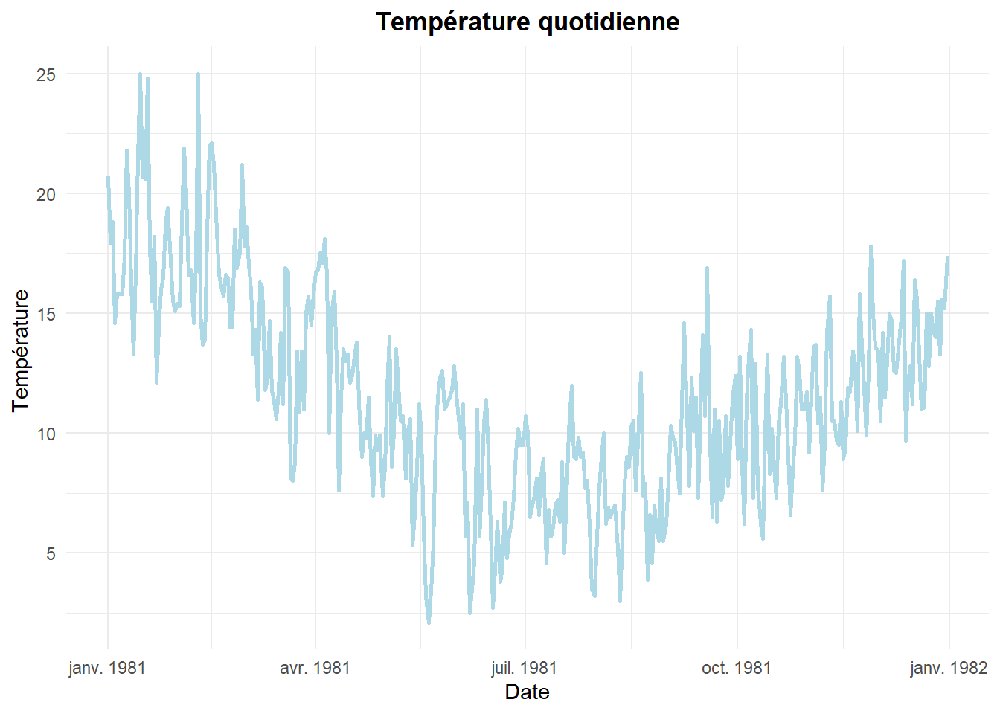
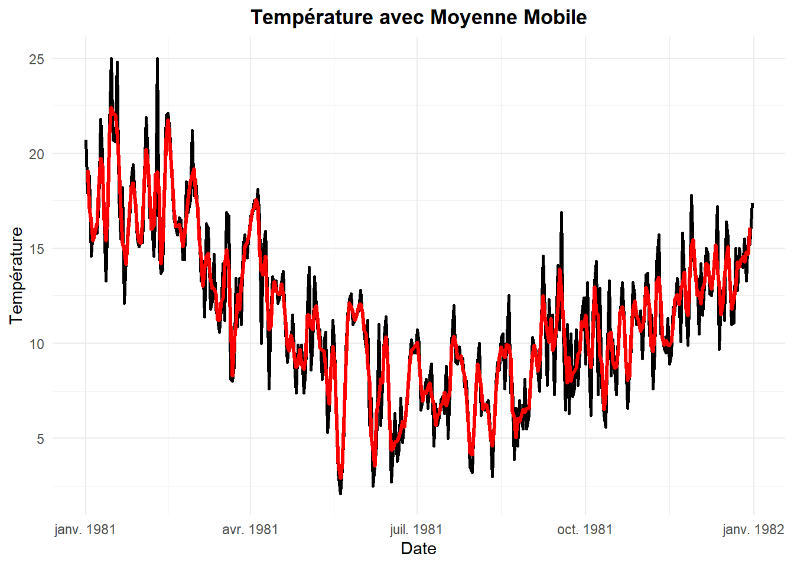
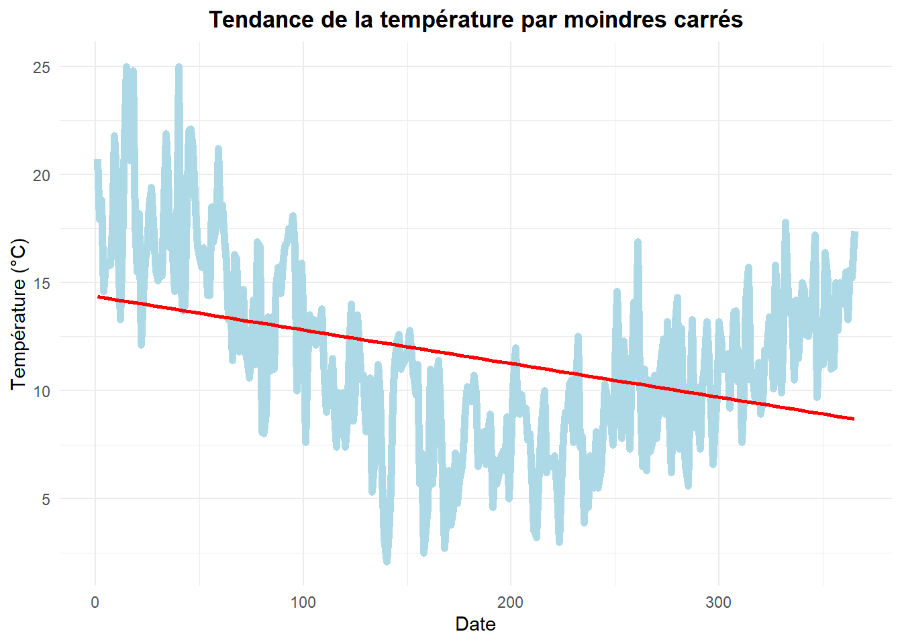
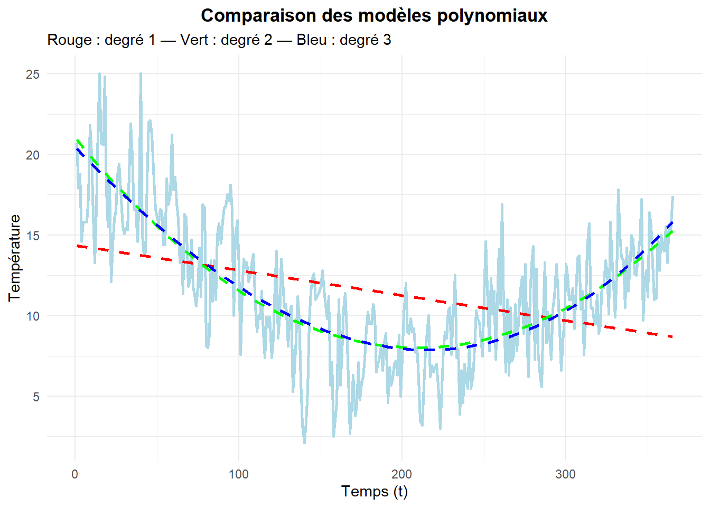
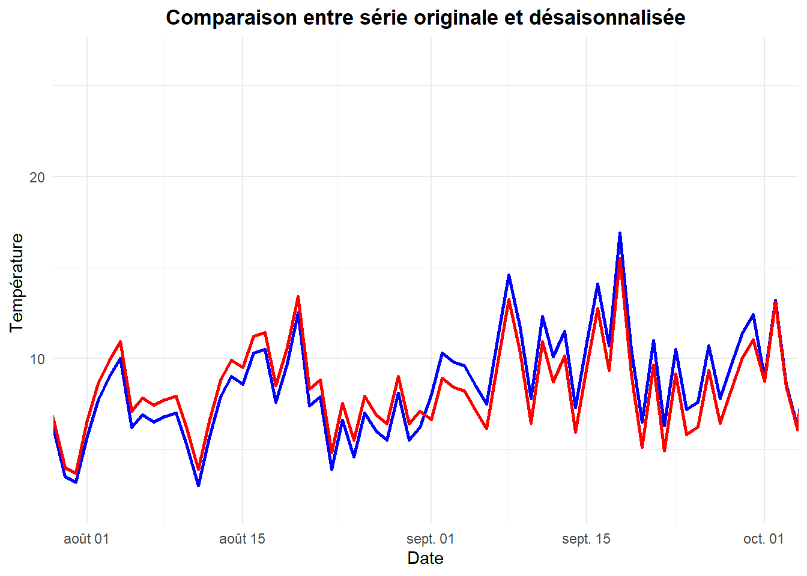

| Nom_Variable | Description |
|---|---|
| Date | Date d’enregistrement de la température (au format AAAA-MM-JJ) |
| Temp | Température quotidienne minimale enregistrée (en degrés Celsius) |
Thème 8: Série chronologique
Introduction
Les séries chronologiques sont utilisées dans plusieurs domaines. En économie, on s’intéresse à l’évolution du produit intérieur brut (PIB), du chômage ou de l’inflation, trimestre après trimestre. En santé publique, on suit le nombre de cas de maladies par jour ou par semaine.
Une série chronologique (ou série temporelle) est une suite réelle finie d’observations notées Y₁, Y₂, …, Yₜ, chacune associée à un instant t. Si les valeurs de la série sont mesurées à des intervalles réguliers (mensuels, journaliers, annuels), on parle de série chronologique régulière ; sinon, on parle de série irrégulière.
Mise en situation
Ce jeu de données décrit les températures minimales quotidiennes enregistrées tout au long de l’année 1981 dans la ville de Melbourne, en Australie.
Les unités sont exprimées en degrés Celsius, et le jeu de données contient 365 observations.
La source des données est le Bureau météorologique australien (Australian Bureau of Meteorology).
Les températures ayant été mesurées quotidiennement, il s’agit donc d’une série chronologique régulière.
# Définir le répertoire de travail
setwd("C:/Users/Fatou/OneDrive - HEC Montréal/PROJET SUPERVISE/Data")
# Charger les données
meteo=read.csv("Météo.csv",sep=";", header=TRUE)
# Convertit la colonne Date au format Date
meteo$Date = as.Date(meteo$Date)Objectif
L’analyse de série chronologique permet de répondre à différentes questions :
Quelle est l’évolution globale de la variable étudiée ?
Peut-on estimer les valeurs futures de la série ?
Y a-t-il eu un changement de régime ou un événement perturbateur à un moment donné ?
Représentation graphique d’une série chronologique:
#Charger ggplot2
library(ggplot2)
# Trace l'évolution de la température au fil du temps
ggplot(meteo, aes(x = Date, y = Temp)) +
geom_line(color = "lightblue", size = 1) +
labs(title = "Température quotidienne",
x = "Date", y = "Température ") +
theme_minimal()+
theme(
plot.title = element_text(hjust = 0.5, face = "bold")
)
La représentation graphique d’une série chronologique permet de repérer certaines caractéristiques, telles que :
Une tendance
Un cycle
Un phénomène périodique
Des variations accidentelles
Des variations irrégulières
Les composantes d’une série chronologique :
On distingue 3 composantes dans une série chronologique :
La tendance: T (t)
La tendance représente la composante structurelle de long terme. Elle reflète une évolution générale (à la hausse ou à la baisse) de la série.
La tendance peut être de type:
Linéaire : Tₜ = a + b*t
Quadratique : Tₜ = a·t² + bt + c
Tendance logarithmique : Tₜ = log(t)
Par exemple: l’augmentation de la population dans une ville sur plusieurs décennies
La saisonnalité: S (t)
Il s’agit de variations périodiques régulières observées sur des cycles courts, et liées au calendrier
Par exemple: La hausse des ventes de chocolat à Pâques ;
Le cycle: C (t)
Le cycle est une fluctuation de long terme, qui n’est pas strictement périodique. Il est souvent associé à des cycles économiques, politiques ou sociaux ou environnementaux.
Par exemple: L’alternance entre croissance et récession dans l’économie sur plusieurs années.
Le résidu: R (t)
Cette composante représente la part aléatoire, de la série : des variations ponctuelles, imprévues, comme une grève, une crise sanitaire, une panne informatique.
On suppose en général que les résidus ont une espérance nulle, une variance constante, et sont non corrélés.
Modèles de série chronologique : Additif vs Multiplicatif
Modèle additif
Le modèle additif suppose que l’effet de chacune des composantes est indépendant des autres, et qu’on peut les additionner, ainsi chaque observation est donnée par la fonction:
Yₜ = Tₜ + Sₜ + Cₜ + Rₜ pour t allant de 1 à n
Ce modèle est adapté quand :
Les amplitudes saisonnières restent constantes au fil du temps
Les fluctuations sont homogènes, quelle que soit la valeur de la tendance.
Pour un modèle additif, l’amplitude des variations est constante autour de la tendance, c’est-à-dire que l’on peut encadrer la courbe entre deux lignes parallèles.
Modèle multiplicatif
Dans le modèle multiplicatif, les composantes interagissent de manière proportionnelle :
Yₜ = Tₜ × Sₜ × Cₜ × Rₜ pour t allant de 1 à n
Ce modèle est plus adapté lorsque :
Les amplitudes saisonnières augmentent avec le niveau de la tendance
Les effets saisonniers sont plus marqués quand la série prend de grandes valeurs
Pour un modèle multiplicatif, l’amplitude des variations n’est pas constante autour de la tendance, elle diminue ou augmente avec le temps. Ainsi, la droite qui encadre la courbe se rejoint ou s’éloigne.
Estimation de la tendance
On a une série chronologique Yₜ pour t allant de 1 à n et on cherche une fonction du temps qui permet de modéliser la tendance. C’est-à-dire qu’on cherche à modéliser T en fonction de t.
Rappel
La tendance peut être de différents types, notamment:
Linéaire : Tₜ = a + bt
Quadratique : Tₜ = at² + bt + c
Logarithmique : Tₜ = log(t)
Il existe deux types de méthodes pour modéliser la tendance, les méthodes dites non paramétriques et celles dites paramétriques.
Méthode non paramétrique: Moyennes mobiles
La moyenne mobile est une méthode simple permettant d’extraire la tendance d’une série chronologique. Le calcul de la moyenne mobile dépend d’un paramètre l, appelé la demi-largeur de la fenêtre, car on prend l observations avant t et l observations après t, en plus de t lui-même. Ainsi, pour 2l = k, la fenêtre sera donnée par :
\[ \{t - k, \ldots, t, \ldots, t + k\} \]
Ce paramètre correspond au nombre d’observations incluses dans le calcul de la moyenne mobile.
La moyenne mobile se calcule par:
\[ T_t = \frac{1}{2l + 1} \sum_{i=t-l}^{t+l} y_i \]
Tₜ est la tendance de la série au temps t
l est la largeur de la fenêtre
Yₜ= valeur de la série au temps t
Calculons donc la moyenne mobile de notre série chronologique avec une fenêtre de taille 3.
#Importer la librairie
library(zoo)
# Calculer la moyenne mobile centrée avec une fenêtre de taille 3
meteo$mm=rollmean(meteo$Temp, k = 3, align = "center", fill = NA)
meteo$mm [1] NA 19.133333 17.100000 16.400000 15.400000 15.800000 16.333333
[8] 18.333333 19.733333 19.333333 16.500000 15.400000 17.166667 21.066667
[15] 22.400000 22.100000 22.033333 21.033333 19.333333 17.133333 15.266667
[22] 14.900000 14.166667 15.633333 17.066667 18.200000 18.433333 17.366667
[29] 15.933333 15.333333 15.266667 16.500000 18.666667 20.200000 19.466667
[36] 17.766667 16.000000 16.166667 18.900000 19.033333 17.900000 14.200000
[43] 15.300000 18.066667 20.800000 21.766667 20.566667 18.733333 17.033333
[50] 16.133333 16.133333 16.266667 15.833333 15.100000 15.766667 16.600000
[57] 17.633333 18.533333 18.833333 19.200000 17.800000 17.200000 15.433333
[64] 14.533333 13.000000 14.000000 14.600000 14.733333 13.366667 12.900000
[71] 12.900000 12.600000 11.233333 11.200000 12.166667 12.366667 14.100000
[78] 14.933333 13.900000 10.933333 8.300000 10.066667 11.033333 12.566667
[85] 11.766667 13.133333 13.900000 15.066667 15.333333 15.666667 16.433333
[92] 17.000000 17.133333 17.566667 17.266667 14.900000 13.833333 13.600000
[99] 14.600000 12.166667 10.700000 10.866667 12.666667 13.266667 12.800000
[106] 12.600000 12.566667 13.133333 12.533333 11.133333 9.866667 9.600000
[113] 10.433333 10.066667 9.266667 8.733333 8.866667 9.700000 8.866667
[120] 8.633333 9.300000 11.500000 11.500000 10.866667 10.700000 11.833333
[127] 12.000000 11.066667 9.766667 9.633333 9.600000 8.666667 7.500000
[134] 6.800000 8.766667 9.833333 8.966667 6.300000 3.733333 2.900000
[141] 3.633333 6.133333 8.833333 11.133333 12.133333 11.966667 11.600000
[148] 11.200000 11.466667 12.000000 12.066667 11.666667 10.666667 10.533333
[155] 8.900000 8.000000 5.100000 4.366667 3.533333 6.366667 7.100000
[162] 8.133333 7.933333 9.833333 10.333333 8.900000 6.000000 4.366667
[169] 4.433333 4.800000 4.833333 5.100000 5.433333 5.900000 5.600000
[176] 6.433333 7.566667 8.900000 9.633333 9.733333 9.900000 10.066667
[183] 9.066667 7.833333 6.966667 7.500000 7.366667 7.666667 7.933333
[190] 7.266667 6.766667 5.700000 6.200000 6.266667 6.766667 6.833333
[197] 7.433333 6.700000 7.066667 7.500000 9.833333 10.366667 9.966667
[204] 9.233333 9.233333 9.333333 8.633333 8.300000 7.266667 5.866667
[211] 4.266667 4.133333 5.533333 7.466667 8.900000 8.400000 7.700000
[218] 6.533333 6.733333 6.766667 6.333333 5.066667 4.600000 5.500000
[225] 7.500000 8.500000 9.300000 9.800000 9.466667 9.266667 9.933333
[232] 9.866667 9.266667 6.400000 6.133333 5.033333 6.066667 5.866667
[239] 6.166667 6.533333 6.366667 6.600000 6.566667 8.166667 9.366667
[246] 9.900000 9.300000 8.533333 9.066667 11.100000 12.500000 11.366667
[253] 10.600000 10.066667 11.300000 9.633333 9.900000 10.766667 11.900000
[260] 13.900000 12.700000 11.300000 9.333333 7.933333 9.266667 8.000000
[267] 8.433333 8.500000 8.700000 9.366667 9.600000 11.133333 10.900000
[274] 11.500000 10.233333 9.333333 8.733333 10.266667 12.966667 11.600000
[281] 11.500000 9.333333 8.966667 6.533333 7.266667 9.633333 10.533333
[288] 10.600000 9.033333 8.700000 8.766667 9.633333 11.600000 11.933333
[295] 11.233333 9.033333 8.033333 8.233333 10.433333 11.800000 12.233333
[302] 11.500000 11.233333 10.633333 10.800000 11.433333 12.933333 12.566667
[309] 11.866667 9.833333 9.566667 10.466667 13.166667 13.466667 12.233333
[316] 10.233333 9.900000 10.166667 9.900000 9.866667 10.066667 11.000000
[323] 12.333333 12.566667 12.033333 12.833333 13.166667 13.766667 11.800000
[330] 11.466667 13.433333 15.133333 15.466667 14.000000 12.500000 12.700000
[337] 12.066667 12.900000 13.166667 14.233333 14.100000 13.266667 12.866667
[344] 13.600000 15.166667 13.900000 13.000000 11.533333 12.033333 13.466667
[351] 14.400000 15.100000 13.300000 11.800000 12.366667 12.966667 14.266667
[358] 14.000000 14.400000 14.566667 14.266667 14.800000 14.700000 16.066667
[365] NACela nous donne, pour chaque instant t, une estimation de la tendance locale autour de ce point.
Visualisation graphique de la moyenne mobile:
# Tracer la température et sa moyenne mobile avec
ggplot(meteo, aes(x = Date)) +
geom_line(aes(y = Temp), color = "black", size = 1) +
geom_line(aes(y = mm), color = "red", size = 1.2) +
labs(title = "Température avec Moyenne Mobile",
x = "Date",
y = "Température") +
theme_minimal()+
theme(
plot.title = element_text(hjust = 0.5, face = "bold")
)
Remarquons que la moyenne mobile est un estimateur non paramétrique de la tendance, au sens où l’on ne suppose pas de structure a priori pour cette tendance (linéaire, polynomiale, etc.).
Exercice
Déterminer la tendance autour de la date 1981-08-14.
# Extraire la tendance à la date précise du 1981-08-14
meteo[meteo$Date == ("1981-08-14"), c("mm")][1] 8.5La tendance au 14 août 1981 est de 8,50 degrés.
Méthode paramétrique : Méthode des moindres carrés
On veut ajuster les données par une droite, et donc modéliser la tendance par une fonction de la forme :
\[ T_t = a + b \cdot t \]
Cette technique consiste à sélectionner les constantes a et b pour minimiser la somme des carrés des erreurs, c’est-à-dire le carré de la différence entre les valeurs observées et celles prédites. Elle est donnée par l’expression suivante :
\[ min\sum_{t=1}^{n} \left( y_t - (a + bt) \right)^2 \]
On cherche donc les valeurs de a et b solutions du système :
\[ S(a, b) \begin{cases} \frac{\partial f}{\partial a}(a, b) = 0 \\ \frac{\partial f}{\partial b}(a, b) = 0 \end{cases} \]
On démontre que le couple solution est (â , b̂) avec :
\[ \hat{b} = \frac{\sum_{i=1}^{n} y_i t_i - n \bar{t} \bar{y}}{\sum_{i=1}^{n} t_i^2 - n \bar{t}^2} \quad , \quad \hat{a} = \bar{y} - \hat{b} \bar{t} \]
où
\[ \bar{t} = \frac{1}{n} \sum_{i=1}^{n} t_i \quad , \quad \bar{y} = \frac{1}{n} \sum_{i=1}^{n} y_i \]
La droite d’équation T =â+b̂t s’appelle la droite des moindres carrés.
Pour faciliter nos analyses, nous allons créer une nouvelle variable que nous nommerons t. Elle prendra des valeurs de 1 à 365, et nous l’utiliserons dans notre modèle de régression.
#Créer un vecteur temps (t)
meteo$t = 1:365# Ajuster un modèle linéaire entre Température et le temps
fonction=lm(Temp~t, data=meteo)
summary(fonction)
Call:
lm(formula = Temp ~ t, data = meteo)
Residuals:
Min 1Q Median 3Q Max
-10.0856 -2.6942 0.0809 2.9799 11.2603
Coefficients:
Estimate Std. Error t value Pr(>|t|)
(Intercept) 14.361394 0.421808 34.047 < 2e-16 ***
t -0.015542 0.001998 -7.781 7.58e-14 ***
---
Signif. codes: 0 '***' 0.001 '**' 0.01 '*' 0.05 '.' 0.1 ' ' 1
Residual standard error: 4.021 on 363 degrees of freedom
Multiple R-squared: 0.1429, Adjusted R-squared: 0.1406
F-statistic: 60.54 on 1 and 363 DF, p-value: 7.58e-14La tendance est modélisée par la fonction: Tₜ= 14.36 - 0.015*t
# Tracer la température et sa tendance linéaire
ggplot(meteo, aes(x = t, y = Temp)) +
geom_line(color = "lightblue", size = 2) +
geom_smooth(method = "lm", se = FALSE, color = "red", size = 1) +
labs(title = "Tendance de la température par moindres carrés",
x = "Date",
y = "Température (°C)") +
theme_minimal()+
theme(
plot.title = element_text(hjust = 0.5, face = "bold")
)
Exercice
Déterminer quelle est la tendance au temps t=226 (1981-08-14)
# Prédire la température pour t = 226 avec le modèle linéaire
predict(fonction, list(t = 226)) 1
10.84897 Entre la méthode des moyennes mobiles et celle des moindres carrés, la tendance diffère de deux unités à la date du 1981-08-14
Méthode des moindres carrés généralisée
On remarque ici que la droite de régression ne semble pas bien ajuster notre série chronologique.
Un modèle linéaire n’est donc peut-être pas adapté à la structure de la série.Nous allons alors utiliser la forme généralisée de la méthode des moindres carrés, qui permet d’estimer une régression polynomiale. La tendance sera alors donnée par une fonction polynomiale en fonction du temps, de la forme suivante :
\[ T_t = a + b \cdot t \ + c\cdot t^2 \ + d\cdot t^3 \ +... \]
On cherche les coefficients a,b,c… qui minimisent la somme des carrés des résidus :
\[ \min_{a, b, c} \sum_{t=1}^n \left( y_t - (a + b t + c t^2+ ...) \right)^2 \]
Soit X ∈ ℝⁿ×(p+1) la matrice de régression :
\[ X = \begin{bmatrix} 1 & t_1 & t_1^2 & \cdots & t_1^p \\ 1 & t_2 & t_2^2 & \cdots & t_2^p \\ \vdots & \vdots & \vdots & \ddots & \vdots \\ 1 & t_n & t_n^2 & \cdots & t_n^p \\ \end{bmatrix} \]
Le vecteur des observations :
\[ \mathbf{y} = \begin{bmatrix} y_1 \\ y_2 \\ \vdots \\ y_n \\ \end{bmatrix} ,\quad \mathbf{a} = \begin{bmatrix} a_0 \\ a_1 \\ \vdots \\ a_p \\ \end{bmatrix} \]
La solution du système est donnée par la formule des moindres carrés :
\[ \hat{\mathbf{a}} = (X^\top X)^{-1} X^\top \mathbf{y} \]
Choix du degré du polynôme
On choisira le polynôme de degré k le plus petit possible qui maximise un critère de performance, en l’occurrence, ici on choisit le coefficient de détermination ajusté (R² ajusté). Ainsi, nous retiendrons le modèle polynomial le plus simple offrant le meilleur ajustement selon ce critère.
# Modèles polynomiaux de degré 1 à 3
mod1 = lm(Temp ~ poly(t, 1), data = meteo)
mod2 = lm(Temp ~ poly(t, 2), data = meteo)
mod3 = lm(Temp ~ poly(t, 3), data = meteo)
summary(mod1)
Call:
lm(formula = Temp ~ poly(t, 1), data = meteo)
Residuals:
Min 1Q Median 3Q Max
-10.0856 -2.6942 0.0809 2.9799 11.2603
Coefficients:
Estimate Std. Error t value Pr(>|t|)
(Intercept) 11.5173 0.2105 54.721 < 2e-16 ***
poly(t, 1) -31.2857 4.0210 -7.781 7.58e-14 ***
---
Signif. codes: 0 '***' 0.001 '**' 0.01 '*' 0.05 '.' 0.1 ' ' 1
Residual standard error: 4.021 on 363 degrees of freedom
Multiple R-squared: 0.1429, Adjusted R-squared: 0.1406
F-statistic: 60.54 on 1 and 363 DF, p-value: 7.58e-14summary(mod2)
Call:
lm(formula = Temp ~ poly(t, 2), data = meteo)
Residuals:
Min 1Q Median 3Q Max
-7.326 -1.835 -0.004 1.911 8.473
Coefficients:
Estimate Std. Error t value Pr(>|t|)
(Intercept) 11.5173 0.1421 81.04 <2e-16 ***
poly(t, 2)1 -31.2857 2.7151 -11.52 <2e-16 ***
poly(t, 2)2 56.5739 2.7151 20.84 <2e-16 ***
---
Signif. codes: 0 '***' 0.001 '**' 0.01 '*' 0.05 '.' 0.1 ' ' 1
Residual standard error: 2.715 on 362 degrees of freedom
Multiple R-squared: 0.6103, Adjusted R-squared: 0.6082
F-statistic: 283.5 on 2 and 362 DF, p-value: < 2.2e-16summary(mod3)
Call:
lm(formula = Temp ~ poly(t, 3), data = meteo)
Residuals:
Min 1Q Median 3Q Max
-7.5077 -1.9538 -0.0305 1.8886 8.4884
Coefficients:
Estimate Std. Error t value Pr(>|t|)
(Intercept) 11.5173 0.1419 81.183 <2e-16 ***
poly(t, 3)1 -31.2857 2.7104 -11.543 <2e-16 ***
poly(t, 3)2 56.5739 2.7104 20.873 <2e-16 ***
poly(t, 3)3 4.0865 2.7104 1.508 0.132
---
Signif. codes: 0 '***' 0.001 '**' 0.01 '*' 0.05 '.' 0.1 ' ' 1
Residual standard error: 2.71 on 361 degrees of freedom
Multiple R-squared: 0.6127, Adjusted R-squared: 0.6095
F-statistic: 190.4 on 3 and 361 DF, p-value: < 2.2e-16
Le modèle polynomial de degré 1 nous donne la même courbe que le modèle linéaire. Même si l’expression de la fonction est différente, le R² ajusté et les résidus restent identiques. On observe que les courbes des modèles de degré 2 et 3 se superposent et épousent mieux la forme de la série chronologique.
Le R² ajusté du modèle de degré 2 est de 0,6082, et celui du modèle de degré 3 est de 0,6095. Le modèle de degré 3 n’apporte donc pas d’amélioration significative. Nous retiendrons le modèle de degré 2, qui explique au mieux la tendance de la série.
Exercice
Déterminer quelle est la tendance au temps t=226 (1981-08-14)
# Prédire la température pour t = 226 avec le modèle polynomial de degré 2
predict(mod2, list(t = 226)) 1
8.089592 On observe qu’avec le modèle polynomial de degré 2, la tendance à la date du 14 août 1981 se rapproche davantage de celle obtenue avec la méthode de la moyenne mobile que de celle obtenue avec la régression linéaire.
Désaisonnalisation d’une série chronologique
Pour rappel le modèle additif se décompose sous la forme suivante:
Yₜ = Tₜ + Sₜ + Cₜ + Rₜ, pour tout t allant de 1 à n
Pour simplifier nos analyses, nous ne prendrons en compte que les composantes de tendance et de saisonnalité . Le modèle devient alors :
Yₜ = Tₜ + Sₜ
Ainsi, si l’on connaît la tendance Tₜ , la saisonnalité peut être isolée par la relation suivante :
Sₜ =Yₜ -Tₜ pour tout t allant de 1 à n
On obtient les coefficients Sⱼ ou j représente la saison, en calculant la moyenne des différences Yₜ − Tₜ correspondant à une même saison. On calcule ensuite la moyenne Cⱼ de ces coefficients Sⱼ. Si le modèle est bien choisi, cette moyenne doit être proche de 0.
# Calculer la tendance avec le modèle polynomial
meteo$Tendance = predict(mod2)
# Calculer la saisonnalité en soustrayant la tendance
meteo$Saisonalite = meteo$Temp - meteo$TendanceAfin de calculer les coefficients saisonniers Sⱼ, on regroupe d’abord les observations par période saisonnière (par exemple, chaque mois). Pour chaque période, on calcule ensuite la moyenne arithmétique des valeurs de la composante saisonnière observées sur l’ensemble des cycles disponibles. Cela donne un coefficient saisonnier moyen Sⱼ pour chaque saison . Dans notre cas, on choisira des périodes mensuelles. Par la suite, on calcule la moyenne arithmétique Cⱼ des coefficients saisonniers non centrés Sⱼ, ce qui permet d’obtenir une moyenne centrale utilisée pour centrer les coefficients saisonniers.
# Charger le package dplyr
library(dplyr)
# Extraire le mois depuis la date
meteo$Mois = as.numeric(format(meteo$Date, "%m"))
# Regrouper par mois et calculer la saisonnalité moyenne (Sⱼ)
coeff_saisonalite <- meteo %>%
group_by(Mois) %>%
summarise(coef = mean(Saisonalite, na.rm = TRUE))
# Centrer les coefficients saisonniers
moyenne_saison <- mean(coeff_saisonalite$coef)
coeff_saisonalite$coef_centre <- coeff_saisonalite$coef - moyenne_saison
print(coeff_saisonalite)# A tibble: 12 × 3
Mois coef coef_centre
<dbl> <dbl> <dbl>
1 1 -1.43 -1.45
2 2 1.68 1.66
3 3 0.113 0.0953
4 4 1.13 1.11
5 5 -0.129 -0.147
6 6 -1.26 -1.28
7 7 -0.494 -0.511
8 8 -0.896 -0.914
9 9 1.39 1.37
10 10 0.153 0.136
11 11 0.226 0.209
12 12 -0.271 -0.289 Pour obtenir la série désaisonnalisée, on soustrait les coefficients centrés aux Yₜ.
# Ajouter les coefficients centrés à chaque observation selon le mois
meteo <- meteo %>%
left_join(coeff_saisonalite %>% select(Mois, coef_centre), by = "Mois")
#Calculer la série désaisonnalisée
meteo$Desaisonnalisee = meteo$Temp - meteo$coef_centre#On choisit une petite période pour la visualisation
date_debut = as.Date("1981-08-01")
date_fin = as.Date("1981-10-01")
# Tracer la température observée et la série désaisonnalisée
ggplot(meteo, aes(x = Date)) +
geom_line(aes(y = Temp), color = "blue", size = 1) +
geom_line(aes(y = Desaisonnalisee), color = "red", size = 1) +
labs(title = "Comparaison entre série originale et désaisonnalisée",
x = "Date", y = "Température ") +
theme_minimal() +
theme(
plot.title = element_text(hjust = 0.5, face = "bold")
)+
coord_cartesian(xlim = c(date_debut, date_fin))
Grâce à cette désaisonnalisation, la série est désormais débarrassée des variations saisonnières mensuelles, ce qui permet de mieux identifier la tendance réelle, de détecter les variations externes et de réaliser des prévisions plus fiables, sans l’effet du bruit saisonnier.
On observe que la série désaisonnalisée (en rouge) ne suit pas exactement la série originale (en bleu), car elle est dépourvue des variations saisonnières et atténue certaines fluctuations aléatoires.